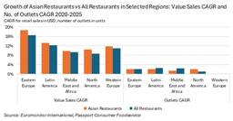
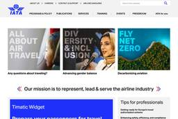
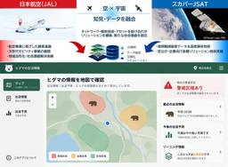
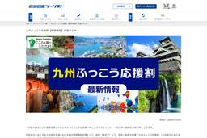

TRAICY（トライシー）
https://www.traicy.com/
TRAICY（トライシー）は、航空・LCC・鉄道・ホテル・ゲストハウス・バックパッカーズの最新情報を発信している、日本最大級のトラベルメディアです。
フィード
クラブツーリズム、不正アクセスで約432万件の個人情報が流出の可能性
TRAICY（トライシー）
クラブツーリズムは、サーバーの一部が外部からの不正アクセスを受け、保有する個人情報の一部が外部に流出した可能性があると発表した。 10月30日午前5時45分に不正アクセスを検知し、調査を開始。不正アクセスを受けた箇所の通 […]投稿 クラブツーリズム、不正アクセスで約432万件の個人情報が流出の可能性 は TRAICY（トライシー） に最初に表示されました。
4時間前
パナソニック・アビオニクス、門真工場の拡張を完了 「Astrova」の需要拡大に対応
TRAICY（トライシー）
パナソニック・アビオニクスは、大阪・門真工場の拡張を完了し、10月23日に開所式を開催した。 門真工場では、航空会社45社以上に供給する、50万席分以上の次世代機内エンゲージメントソリューション「Astrova（アストロ […]投稿 パナソニック・アビオニクス、門真工場の拡張を完了 「Astrova」の需要拡大に対応 は TRAICY（トライシー） に最初に表示されました。
6時間前
ロンドン・シティ空港、初のラウンジ「09:LDN Suite」を2027年初頭に開業
TRAICY（トライシー）
スイスポート・インターナショナル傘下のAspire Pre-Flight Hospitality（Aspire）は、ロンドン・シティ空港に開設するラウンジの名称を「09:LDN Suite」に決定したと発表した。 シティ […]投稿 ロンドン・シティ空港、初のラウンジ「09:LDN Suite」を2027年初頭に開業 は TRAICY（トライシー） に最初に表示されました。
6時間前
コンラッド大阪、ネバーランドの世界観を表現したメロンが主役のスイーツビュッフェを開催
TRAICY（トライシー）
コンラッド大阪は、スイーツビュッフェ「Melon de Green Neverland」を9月4日から11月29日までの金曜と土休日限定で開催する。 スイーツは、ワニをモチーフにしたメロンバニラムース、海賊と青い海を表現 […]投稿 コンラッド大阪、ネバーランドの世界観を表現したメロンが主役のスイーツビュッフェを開催 は TRAICY（トライシー） に最初に表示されました。
7時間前
エアロK、熊本〜清州線を開設 12月23日から週3往復
TRAICY（トライシー）
エアロKは、熊本〜清州線を12月23日に開設する。 月・水・金曜の週3往復を運航する。機材はエアバスA320型機を使用する。所要時間は熊本発が1時間40分、清州発が1時間45分。 エアロKは、札幌/千歳・帯広・茨城・東京 […]投稿 エアロK、熊本〜清州線を開設 12月23日から週3往復 は TRAICY（トライシー） に最初に表示されました。
11時間前
エアプレミア、札幌/千歳〜ソウル/仁川線を開設 12月2日から週4往復
TRAICY（トライシー）
エアプレミアは、札幌/千歳〜ソウル/仁川線を12月2日に開設する。 水・木・土・日曜の週4往復を運航する。機材はボーイング787-9型機を使用する。所要時間は札幌/千歳発が3時間半、ソウル/仁川発が2時間40分。 同路線 […]投稿 エアプレミア、札幌/千歳〜ソウル/仁川線を開設 12月2日から週4往復 は TRAICY（トライシー） に最初に表示されました。
12時間前
HIS、中間持株会社「旅行事業承継NEXTホールディングス」を設立へ 11月30日付けで
TRAICY（トライシー）
エイチ・アイ・エス（HIS）は、完全子会社となる中間持株会社を設立すると発表した。 国内の旅行会社が後継者不在による事業承継問題に加え、過年度の事業環境悪化に伴う債務負担や、将来の成長に向けた投資余力の不足など、財務基盤 […]投稿 HIS、中間持株会社「旅行事業承継NEXTホールディングス」を設立へ 11月30日付けで は TRAICY（トライシー） に最初に表示されました。
12時間前

世界のアジア系レストラン、5年で年平均11％成長 旅行での食体験が需要を後押し
TRAICY（トライシー）
市場調査会社のユーロモニターインターナショナルは、アジア系レストランの需要が世界各地で増加しているとの調査結果を発表した。 レポート「世界で高まるアジア料理の需要」で明らかにしたもので、2020年から2025年にかけて、 […]投稿 世界のアジア系レストラン、5年で年平均11％成長 旅行での食体験が需要を後押し は TRAICY（トライシー） に最初に表示されました。
13時間前
六花亭、「お得意さまラウンジ極楽」の必要ポイント数引き上げ 2027年1月から
TRAICY（トライシー）
北海道帯広市の製菓メーカーの六花亭は、「お得意さまラウンジ極楽」の入場に必要なポイント数を2027年1月1日利用分から引き上げる。 「お得意さまラウンジ極楽」は、札幌本店と帯広本店に設置されており、六花亭ポイントの引き換 […]投稿 六花亭、「お得意さまラウンジ極楽」の必要ポイント数引き上げ 2027年1月から は TRAICY（トライシー） に最初に表示されました。
14時間前

IATA、入国拒否された旅客の費用負担で各国政府に見直しを要請 2
2
TRAICY（トライシー）
国際航空運送協会（IATA）は、到着時に入国を拒否された旅客をめぐり、政府と航空会社の間で責任と費用のより公平な分担を求めた。 航空会社は出発前に渡航書類を確認することで入国拒否の発生を防ぐ役割を担っているが、必要な情報 […]投稿 IATA、入国拒否された旅客の費用負担で各国政府に見直しを要請 は TRAICY（トライシー） に最初に表示されました。
15時間前
エールフランスKLM「フライング・ブルー」が3年連続で世界最高のマイレージプログラムに point.me発表
TRAICY（トライシー）
特典航空券検索プラットフォームのpoint.meは、第3回「World's Best Airline Rewards Programs」のランキングを発表した。 エールフランスKLMの「フライング・ブルー」が3年連続で総 […]投稿 エールフランスKLM「フライング・ブルー」が3年連続で世界最高のマイレージプログラムに point.me発表 は TRAICY（トライシー） に最初に表示されました。
16時間前

JALとスカパーJSAT、業務提携を締結 衛星データでヒグマの出没リスク可視化へ
TRAICY（トライシー）
日本航空（JAL）とスカパーJSATは、衛星データを活用した地域課題の解決と新規事業の創出に向け、業務提携基本契約を締結した。 スカパーJSATが持つ衛星データと解析技術に、JALが航空事業で培った安全に関する知見や地域 […]投稿 JALとスカパーJSAT、業務提携を締結 衛星データでヒグマの出没リスク可視化へ は TRAICY（トライシー） に最初に表示されました。
16時間前
エミレーツ航空、ドバイ〜オーランド線にエアバスA350-900型機を投入 11月1日から
TRAICY（トライシー）
エミレーツ航空は、ドバイ〜オーランド線にエアバスA350-900型機を、11月1日から投入する。 現在投入している、ボーイング777-300ER型機から置き換える。1日1往復を運航する。 エアバスA350-900型機には […]投稿 エミレーツ航空、ドバイ〜オーランド線にエアバスA350-900型機を投入 11月1日から は TRAICY（トライシー） に最初に表示されました。
16時間前
HIS、矢田素史代表取締役会長が退任へ 澤田秀太社長の単独代表に
TRAICY（トライシー）
エイチ・アイ・エス（HIS）は、代表取締役と役員の人事を取締役会で決議したと発表した。 2027年1月27日付で、矢田素史代表取締役会長が退任する。退任後も取締役として、国内関係会社管理・対外関係を担当する。 これにより […]投稿 HIS、矢田素史代表取締役会長が退任へ 澤田秀太社長の単独代表に は TRAICY（トライシー） に最初に表示されました。
18時間前
スプリング・ジャパン、東京/成田・名古屋/中部〜札幌/千歳線で臨時便 12月31日に計2便
TRAICY（トライシー）
スプリング・ジャパンは、東京/成田・名古屋/中部〜札幌/千歳線で12月31日に臨時便を運航する。 両路線ともに1便の計2便を運航する。機材はボーイング737-800型機を使用する。 航空券は、10月29日午後3時から発売 […]投稿 スプリング・ジャパン、東京/成田・名古屋/中部〜札幌/千歳線で臨時便 12月31日に計2便 は TRAICY（トライシー） に最初に表示されました。
19時間前
「スマイルホテル鹿児島中央駅前」、11月1日リブランドオープン 鹿児島初出店
TRAICY（トライシー）
ホスピタリティオペレーションズは、「スマイルホテル鹿児島中央駅前」を11月1日にリブランドオープンする。 旧ビジネスホテルグッドイン鹿児島。建物は地上8階建て。全101室の客室をリニューアルし、シングル60室、ダブル17 […]投稿 「スマイルホテル鹿児島中央駅前」、11月1日リブランドオープン 鹿児島初出店 は TRAICY（トライシー） に最初に表示されました。
20時間前
LOTポーランド航空、エンブラエルE170型機が退役 22年の運航に幕
TRAICY（トライシー）
LOTポーランド航空は、エンブラエルE170型機の運航を10月30日をもって終了し、22年にわたる運航に幕を下ろした。 最終便（機体記号：SP-LDH）は、2004年3月17日に世界で初めてワルシャワ発ウィーン行きで旅客 […]投稿 LOTポーランド航空、エンブラエルE170型機が退役 22年の運航に幕 は TRAICY（トライシー） に最初に表示されました。
21時間前
ANAアメックス、抽選で5万マイルプレゼント
TRAICY（トライシー）
全日本空輸（ANA）は、「50,000マイルが当たる！ANAアメックス ドリームキャンペーン」を8月19日から11月18日まで実施している。 ANAアメックスカード各種カードの本会員を対象に、抽選で300名に50,000 […]投稿 ANAアメックス、抽選で5万マイルプレゼント は TRAICY（トライシー） に最初に表示されました。
1日前
タイガーエア・台湾、日本発着台湾線で「ハロウィンセール」開催 片道7,300円から
TRAICY（トライシー）
タイガーエア・台湾は、「ハロウィンセール」を10月30日から31日まで開催している。 設定路線と片道最低運賃は以下の通り。諸税が別途必要となる。子供運賃の設定はなく、2歳未満の座席を使用しない幼児の片道運賃は2,400円 […]投稿 タイガーエア・台湾、日本発着台湾線で「ハロウィンセール」開催 片道7,300円から は TRAICY（トライシー） に最初に表示されました。
1日前
JTB、危険情報レベル2・3の目的地へのツアー催行中止延長 年内は中止に
TRAICY（トライシー）
JTB（ジェイティービー）は、中東情勢を受けたツアーの催行中止期間を延長する。 海外ツアーJTBMySTYLE、海外添乗員同行・現地係員ツアーのうち、目的地が外務省の危険情報レベル2・3の国・地域のツアーは12月31日出 […]投稿 JTB、危険情報レベル2・3の目的地へのツアー催行中止延長 年内は中止に は TRAICY（トライシー） に最初に表示されました。
1日前
東京メトロ、2028年度にQR乗車券を導入 磁気乗車券は発売終了
TRAICY（トライシー）
東京メトロは、QRコードを活用した紙のきっぷ「QR乗車券」を券売機などで2028年度中に順次発売する。2029年度末を目途に磁気乗車券の発売を終了する。 QR乗車券の対象券種は、普通乗車券と回数乗車券（障がい者用割引回数 […]投稿 東京メトロ、2028年度にQR乗車券を導入 磁気乗車券は発売終了 は TRAICY（トライシー） に最初に表示されました。
1日前
ルフトハンザ・ドイツ航空、従業員のストーリーを描いたA321neoをお披露目 創立100周年の特別塗装
TRAICY（トライシー）
ルフトハンザ・ドイツ航空は、創立100周年を記念した特別塗装機のエアバスA321neo型機「Hamm」（機体記号：D-AIEM）をお披露目した。 同機は数か月にわたり、段階的にデザインを追加してきた。「Made by m […]投稿 ルフトハンザ・ドイツ航空、従業員のストーリーを描いたA321neoをお披露目 創立100周年の特別塗装 は TRAICY（トライシー） に最初に表示されました。
1日前
ソラシドエア、「九州ふっこう応援割」を10月30日開始 長崎県対象
TRAICY（トライシー）
ソラシドエアとANA Xは、旅行支援「九州ふっこう応援割」の長崎県の販売を、10月30日正午から開始した。 販売対象は航空券と宿泊がセットになったダイナミックパッケージ「ソラシド+」のみとなる。宿泊期間は10月31日から […]投稿 ソラシドエア、「九州ふっこう応援割」を10月30日開始 長崎県対象 は TRAICY（トライシー） に最初に表示されました。
1日前
ANA、約37,800人分の個人情報流出の可能性 アマデウスへの不正アクセスで
TRAICY（トライシー）
全日本空輸（ANA）は、旅客サービスシステムの委託先であるアマデウスITグループのシステムが不正アクセスを受け、同社の予約情報の一部が参照された形跡があったと発表した。 対象となるのはは、2023年8月10日から今年9月 […]投稿 ANA、約37,800人分の個人情報流出の可能性 アマデウスへの不正アクセスで は TRAICY（トライシー） に最初に表示されました。
1日前
「東横INN JR宇治駅南口」、12月25日開業 宇治市初出店
TRAICY（トライシー）
東横インは、「東横INN JR宇治駅南口」を12月25日に開業する。 建物は7階建て。客室は、シングルルーム56室、ワイドスペースシングルルーム16室、プレミアムプラスルーム（シングル）4室、エコノミーダブルルーム44室 […]投稿 「東横INN JR宇治駅南口」、12月25日開業 宇治市初出店 は TRAICY（トライシー） に最初に表示されました。
2日前
アイス専門店「21時にアイス」、バーレーンに進出
TRAICY（トライシー）
Mは、アイス専門店の「21時にアイス」をバーレーンに9月29日にオープンした。 ソフトクリームの原料となる北海道産の牛乳のほか、抹茶やほうじ茶、コーヒー豆も日本から輸入している。 店内は茶道の道具や日本の伝統的な灯籠、掛 […]投稿 アイス専門店「21時にアイス」、バーレーンに進出 は TRAICY（トライシー） に最初に表示されました。
2日前

近畿日本ツーリスト、「九州ふっこう応援割」を10月30日午後2時販売再開 熊本県・長崎県対象
TRAICY（トライシー）
近畿日本ツーリストは、旅行支援「九州ふっこう応援割」の熊本県と長崎県の販売を、10月30日午後2時から再開する。当初は10月28日午後2時から再開を予定していたものの、一時停止していた。 長崎県はツアーと宿泊単体、熊本県 […]投稿 近畿日本ツーリスト、「九州ふっこう応援割」を10月30日午後2時販売再開 熊本県・長崎県対象 は TRAICY（トライシー） に最初に表示されました。
2日前
HIS、首都圏発「国内旅行 最終7日間タイムセール」開催中 札幌2日間19,800円からなど
TRAICY（トライシー）
エイチ・アイ・エス（HIS）は、「決算大感謝SALE」で、首都圏発の国内旅行「最終7日間タイムセール」を10月28日正午から11月4日午前10時まで開催している。 東京/羽田・東京/成田発着の飛行機ツアーでは、札幌2日間 […]投稿 HIS、首都圏発「国内旅行 最終7日間タイムセール」開催中 札幌2日間19,800円からなど は TRAICY（トライシー） に最初に表示されました。
2日前
JALカード、更新カードの配送を普通郵便に 2
TRAICY（トライシー）
ジャルカードは、更新カードの配送方法を普通郵便に変更する。 従来は簡易書留にて配送していた。この変更により、対面での受け取りや再配達の手続きが不要となる。 対象カードと変更時期は、JAL・Mastercard、JAL・V […]投稿 JALカード、更新カードの配送を普通郵便に は TRAICY（トライシー） に最初に表示されました。
2日前
じゃらんnet、「じゃらんスペシャルウィーク」を10月30日開始 特別プランやクーポンも
TRAICY（トライシー）
リクルートは、旅行予約サイト「じゃらんnet」で「じゃらんスペシャルウィーク」を、10月30日午前10時から11月19日まで開催する。 限定の半額プランのほか、5％以上が割引となるセールプラン、最大20％が割引となるクー […]投稿 じゃらんnet、「じゃらんスペシャルウィーク」を10月30日開始 特別プランやクーポンも は TRAICY（トライシー） に最初に表示されました。
2日前